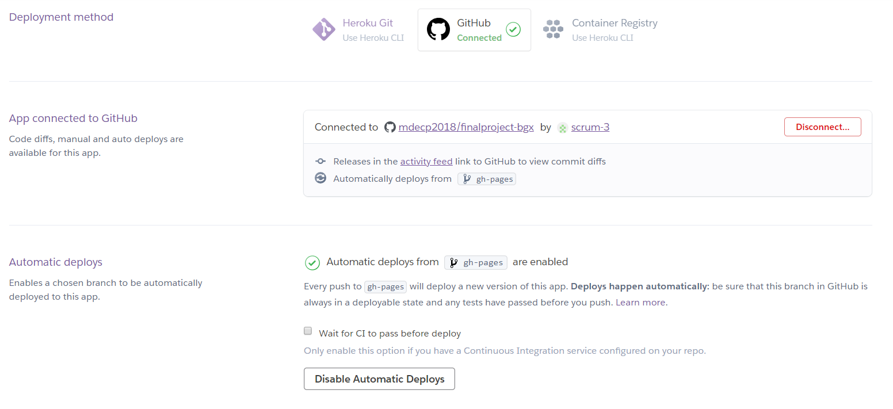

在 http://mde.tw 相關課程中, Heroku 雲端服務與 Github 倉儲中的 Github Pages 分別扮演動態程式網站與靜態超文件網站伺服.
此地所謂的動態程式網站伺服, 指的是利用 Flask 程式框架, 建立 Web Server Gateway Interface 架構的程式環境.
而靜態超文件網站伺服, 則包含一個 WWW 伺服器, 得以讓使用者透過瀏覽器, 擷取伺服器上的 html 與 JavaScript 程式, 且 JavaScript 是下載到近端之後, 使用近端的硬體執行.
以下說明如何在近端利用可攜 Heroku cli 建立能與 Github 倉儲同步的動態雲端網站.
利用電子郵箱, 在 https://www.heroku.com/ 登記一個免費帳號, 在完成電子郵箱驗證後, 即可進入 Dashboard 新增一個應用程式. 而該應用程式名稱必須具備唯一性, 因為完成後, 即可建立 "應用程式名稱".herokuapp.com 網站.
接著進入該應用程式對應的 Settings 頁面, 可以查詢該應用程式的 git 倉儲對應 URL, 以及應用程式的網站名稱.
接下來, 則必須在可攜程式系統中配置 Heroku cli 環境, 以便利用 heroku login, heroku logs 等指令, 登入 Heroku 系統, 取得 git clone 與 push 或 pull 權限.
但是在此處, 隨後將在應用程式對應的 Deploy, 以 auto deploy 的自動部署, 讓特定的 Github repository 與 Heroku 的應用程式倉儲自動同步, 多人協同下的 Github 倉儲一旦改版, Heroku 動態網站將會自動保持同步.
下載 Heroku cli 可攜客戶端: heroku/7.18.9 win32-x64 node-v11.1.0
將檔案在 y:\ 中解開壓縮後, 修改 path 設定, 納入 %Disk%:\heroku\bin, 以便在隨身系統中執行 heroku cli 指令.
runtime.txt 指定 Python 執行版本:
python-3.7.1
Procfile 宣告由 flaskapp.py 中的 app 執行動態程式:
web gunicorn flaskapp:app
requirements.txt 宣告執行動態程式所需要安裝的模組:
Flask==1.0.2 gunicorn==19.7.1 Jinja2==2.10 MarkupSafe==1.0 Werkzeug==0.14.1 beautifulsoup4==4.6.0

設定完成後的動態網頁: http://cp2018-bgx.herokuapp.com/
靜態網頁: https://mdecp2018.github.io/finalproject-bgx
可用於多人協同的 Github 倉儲: https://github.com/mdecp2018/finalproject-bgx